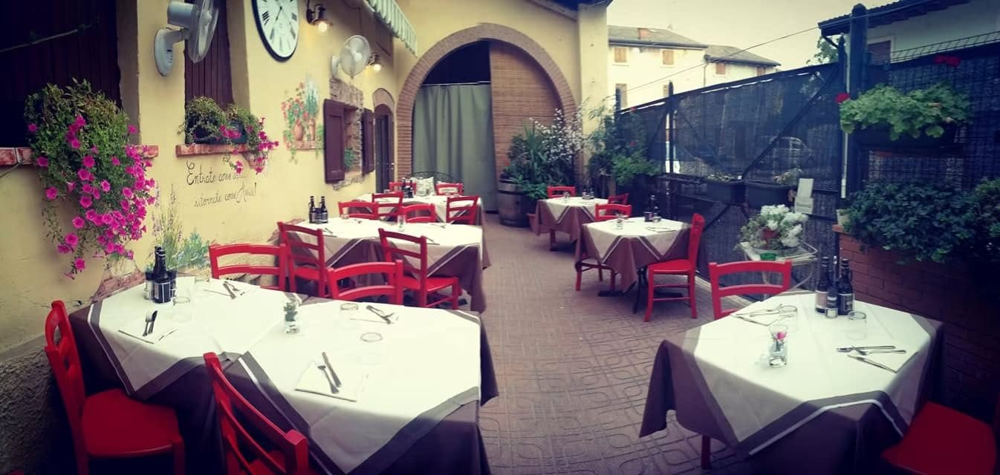
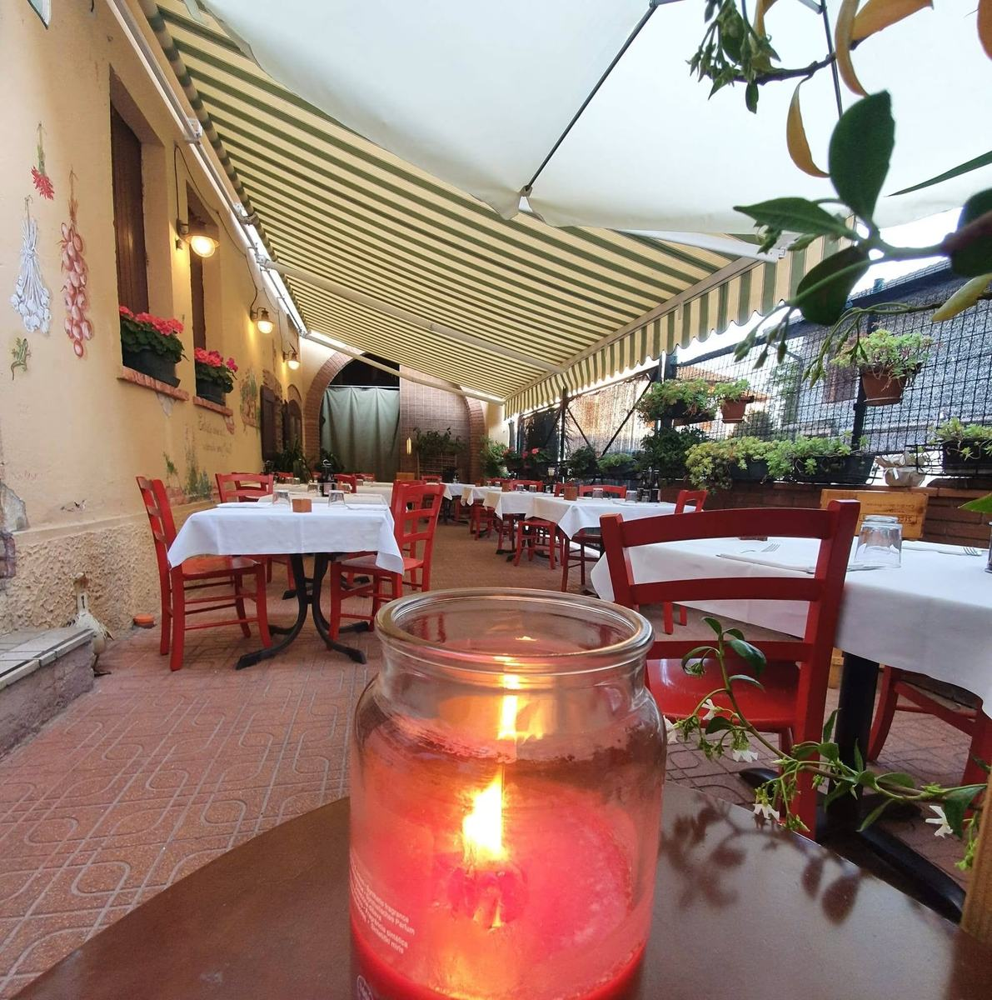
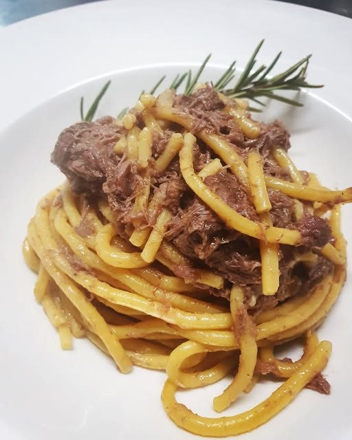
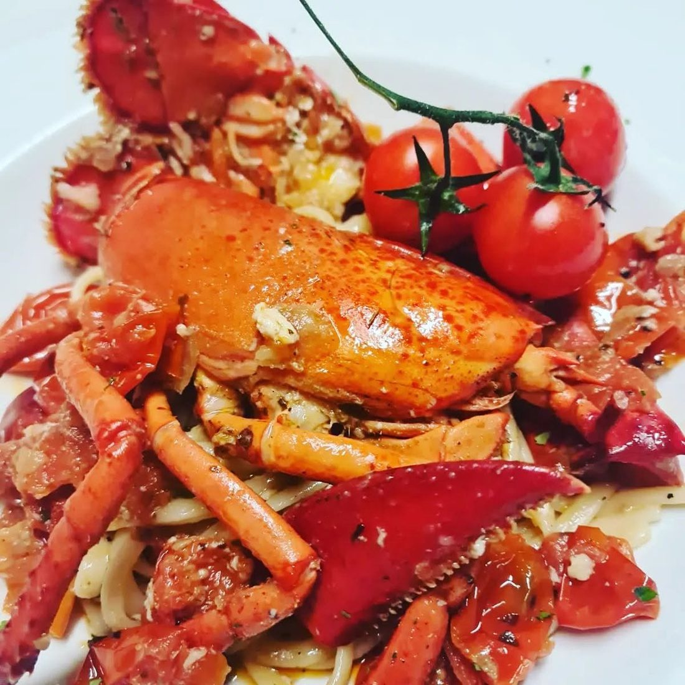
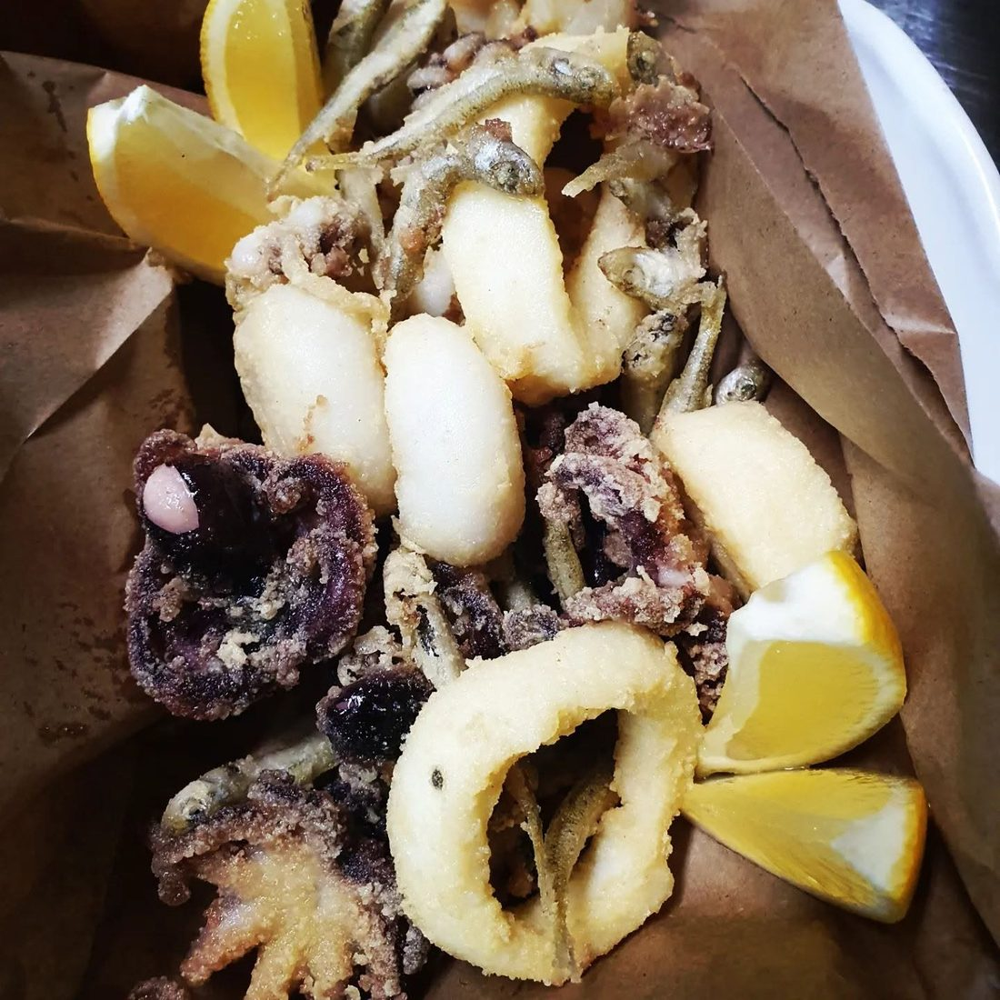
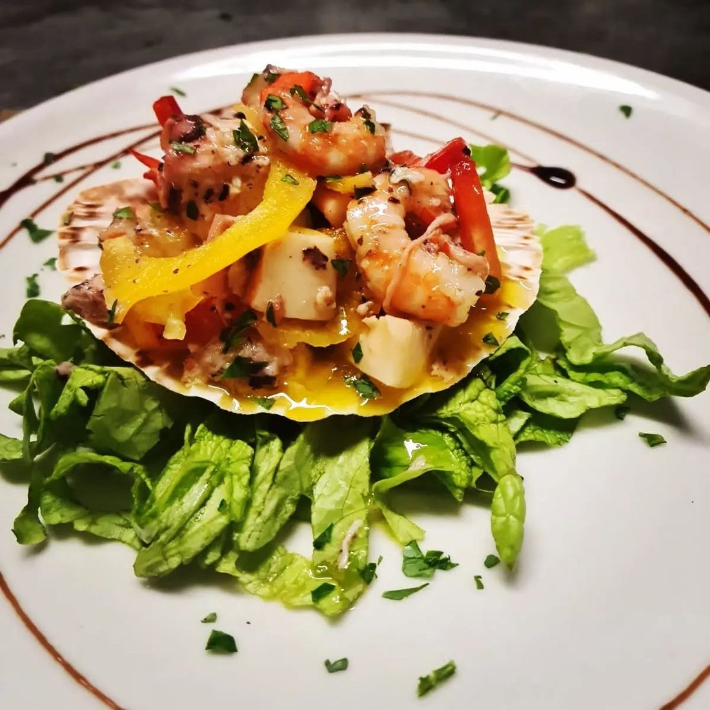
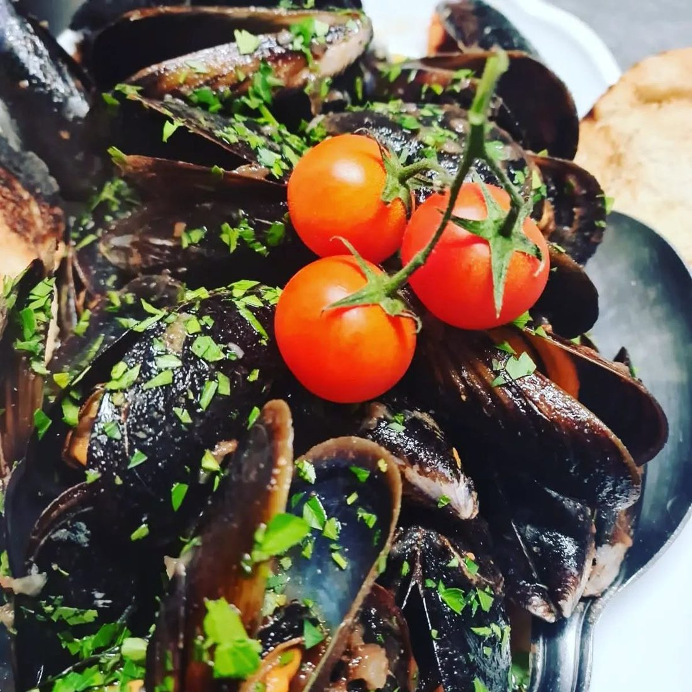
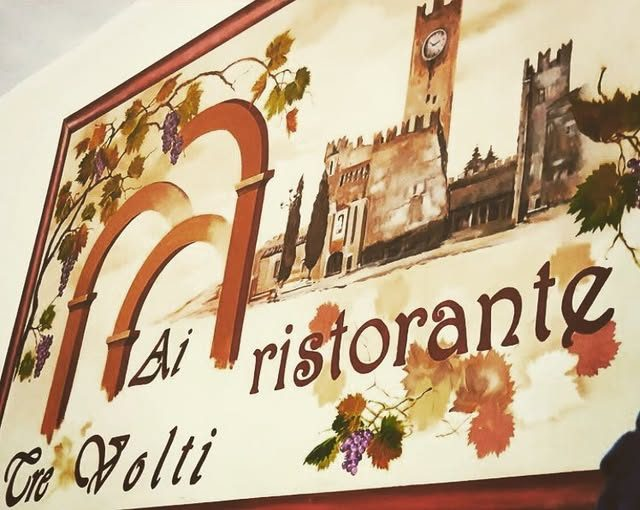

I piatti che nominate di più
Li abbiamo contati nelle vostre recensioni su Google.
- Gnocco fritto e tagliere di salumi
- Tortellini di Valeggioburro e salvia
- Risotto all'Amarone
- Spezzatino di cervo con polenta
- Tagliata di manzo
- Strudel servito caldo
Proposta di Insegna per Ai Tre Volti: non è il sito ufficiale dell'attività
Pranzo e cena dal martedì alla domenica
Cucina casalinga veronese, nel cuore di Villafranca.
Siamo un ristorante a gestione familiare in via Messedaglia 215. Ti aspettiamo a pranzo e a cena dal martedì alla domenica: in sala, nel cortile quando la stagione lo permette, oppure da asporto.




Il nostro nome storico viene dai tre volti, gli archi che trovi anche sulla nostra insegna. Scorri e passaci sotto.
Primo volto
Fiori alle pareti, sedie rosse, la tenda a righe e l'arco di mattoni sul fondo. Quando la stagione lo permette, si cena qui fuori.
Secondo volto
«La nostra ristorazione sa di casalingo e piatti cucinati nella semplicità.» Come i bigoli con il capriolo, la nostra selvaggina.
Terzo volto
Su prenotazione prepariamo una cenetta di pesce: linguine all'astice, fritto misto, capesante. Chiedici al telefono.
Tradizione veronese dagli antipasti ai dolci. Il menu segue le stagioni: per sapere cosa c'è oggi, e i prezzi, chiamaci.
Li abbiamo contati nelle vostre recensioni su Google.




Ai Tre Volti è un ristorante a gestione familiare, portato avanti da mamma e figlia: una passione che ci accomuna e che ogni giorno ci rende orgogliose.
Cuciniamo come a casa, con piatti semplici della tradizione veronese. E se vuoi il pesce, basta dircelo quando prenoti.
Qualche riga dalle recensioni che ci avete lasciato su Google.
«…erano squisiti i tortellini di Valeggio. Al momento dell’ordine siamo stati omaggiati con del pane bruschettato e gnocco fritto.»
Carmen S., su Google
«…il risotto all'Amarone: veramente molto buono! Qualità fantastica e prezzi decisamente giusti per quello che mangi.»
Simone S., su Google
«Ho apprezzato molto anche lo strüdel, servito caldo, davvero delizioso.»
Sele, su Google
«…ho preso un secondo molto gustoso e abbondante…»
Roberto, su Google
Controlla gli orari qui sotto
| Lunedì | Chiuso | |
|---|---|---|
| Martedì | 12:00–14:30 | 19:00–22:30 |
| Mercoledì | 12:00–14:30 | 19:00–22:30 |
| Giovedì | 12:00–14:30 | 19:00–22:30 |
| Venerdì | 12:00–14:30 | 19:00–22:30 |
| Sabato | 12:00–14:30 | 19:00–22:30 |
| Domenica | 12:00–14:30 | 19:00–22:30 |